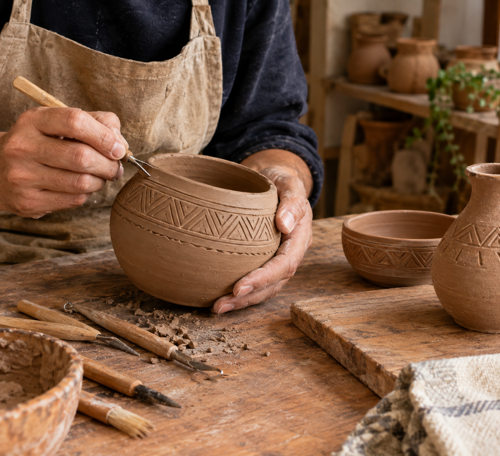

Découvrez les coopératives marocaines qui préservent le savoir-faire traditionnel et font vivre l’artisanat local. Explorez leurs produits uniques, fabriqués avec passion et créativité, et soutenez les artisans qui transmettent leur héritage à travers chaque création.

Coopérative Fakhar
- Region: Marrakech
- Catégorie: Artisanat
- Description:
Découvrez la beauté de
l’artisanat traditionnel à travers cette poterie faite à la main.
Un artisan qualifié façonne et décore soigneusement des pots en argile avec
de magnifiques motifs géométriques, en utilisant des outils et des techniques traditionnels.
Chaque pièce est unique et reflète la créativité, la patience et le savoir-faire de l’artisan.
Fabriquées à partir de matériaux naturels, ces créations préservent le patrimoine culturel et
célèbrent la beauté de l’art fait à la main.